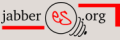
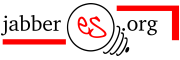
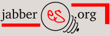
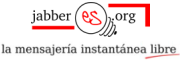
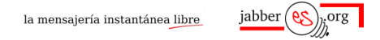
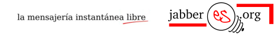

Navegación del libro
Navegación
Web JabberES
Comentarios: 2694
Nodos: 1177
Nuestro servidor Jabber


Enlázanos
Cópianos

Botones de JabberES
Contenido archivado
El contenido de la web se encuentra archivado y no se podrá crear nuevo contenido. Más información.
Escoge el Botón que más te guste o se ajuste al diseño de tu página y copia el código HTML correspondiente.
Asegúrate de seguir estas normas:
Te comprometes a proporcionar información de calidad sobre Jabber, a no usar el logo en conexión con ningún material o comentario de mal gusto o que viole cualquier ley aplicable.
Acuerdas usar solo los logos que aparecen en esta página, sin alterarlos de ninguna forma, incluyendo su tamaño, proporciones, colores o elementos. Si deseas un tamaño o combinación de colores particular o bien hacer un logo distinto coméntalo aqui y se te proporcionará bien la imagen modificada o bien el fichero original de máxima calidad para que tu mismo lo modifiques y podamos añadirlo a esta lista.
El logo debe aparecer él solo: no puede ser combinado con ningún otro gráfico o texto y no puede ser usado como elemento de otro logo o marca.
Acuerdas que el logo enlazará solo a http://www.jabberes.org , en ningún caso a otras páginas de tu sitio o de ningún otro de terceras partes.
Acuerdas que el logo no aparecerá en un lugar predominante de tu página, porque podría dar a entender que es el logo de tu sitio.
Reconoces que el logo es una obra protegida por JabberES. Acuerdas no adoptar, usar o registrar ningún logo similar que se preste a confusión con el logo de JabberES.
Para cualquier duda o sugerencia que tengas puedes añadir un comentario.
Logotipo original diseñado por Alucard. Normas basadas en JabberPowered, ideas para botones de SpreadFirefox.
120x40


180x65


180x65 con leyenda

468x50

468x60

|
2003-2010 © JabberES
Jabber® marca registrada de Jabber, Inc. |


|
Comentarios
Se confunden con la publicidad
El caso es que he puesto uno de estos banners en mi blog, y el outpost lo ha marcado como publicidad -> "[AD]".
Y lo hace porque en la ruta está la palabra banner.
Y en esta web se salta el banner de jabber.org porque aparece sponsor.
En fin, es lo que hay.
JID: darksidex@jabberes.org

imágenes disponibles también en otro directorio
Vaya, en eso no habia caido. Así que he copiado las imágenes de 'files/banner/' al directorio 'files/imagenes/imab/' (¿este otro nombre no estará en la lista negra, verdad?) y modificado toda esta página para que la nueva gente use este otro directorio.
Las imágenes seguirán disponibles en la otra localización también.
ahora el que no veo...
...es el del validador de la w3c, y porque el tamaño de la imagen es de 88x31. No me preguntes, viene así por defecto en el outpost.
En cuanto al resto de banners, por ahora no veo que falte ninguno más, muchas gracias.
JID: darksidex@jabberes.org

468x60
Ahora que me fijo, uno tipo al de 468x60 quedaría muy bien en la parte de arriba de Barrapunto, ¿no? Podían animarse a ponerlo de vez en cuando.
Alberto
Una pena
No hay ningún banner que se ajuste a la medida que necesito. ¿No puedo coger el de 468x65 y dejarlo en 468x50? Ese sería el ideal para mí...
Ya lo tienes :)
Ya lo tienes :)
No estoy de acuerdo en algunos puntos
Veamos con el punto dos, no puedo usar varios logos de jabber? Y si uso varios logos de jabber por usar varias cuentas distintas? Yo creo que en mi web puedo usar cuantos logos quiera, es algo habitual en la blogosfera, igual que si Apache decidiera vuestro punto 3. Bueno, vosotros decidis :)
Por cierto, he modificado otro logo, de jabber, no el vuestro, para realzarlo y no creo que sea delito, porque básicamente es el mismo logo, pero con un destello para que quede más mono ;)
Cyberfrancis
-------------------------------------------------------
Usuario de Linux # 359391
http://www.cyberfrancis.net
Google Talk/Jabber.org/jabberes.org/Gizmoproject/Openwengo: cyberfrancis
redacción de puntos poco clara: aclaraciones
El punto dos se refiere a que no se usen versiones modificadas de estos logos, ni otros completamente distintos. Lo que se pretende evitar es que, por ejemplo, alguien coja uno de estos logos, reemplace la bombilla por una cruz de cinco puntas boca abajo y enlace a JabberES, porque estaría dando una impresión equivocada (como poco) del propósito del sitio :)
El punto tres dice que el logo 'debe aparecer él solo', pero no en el sentido restrictivo de que no pueda estar rodeado por otros, o aparecer en una lista de ellos (cosa muy común en la blogosfera, como comentas). Se refiere a que no se combine este y otro logo dando a entender que ambos enlazan o estan relacionados con JabberEs. Lo que se pretende evitar es que alguien ponga este logo inusualmente cercano a otro de, por ejemplo, Yahoo! porque daría la impresión de que aqui ofrecemos información sobre Yahoo!.
Los iconos de 'powered by' que tenemos abajo del todo en esta página están todos igualmente espaciados, de forma que no se presta a confusión.
Como véras el punto dos y el tres tratan de evitar lo mismo: que se utilize una imagen que se preste a confusión para enlazar a este sitio. Estos dos puntos están redactados en inglés en JabberPowered como uno solo, el punto 2.
Respecto a modificar las imágenes para mejorarlas: ¡por supuesto que son bienvenidas! Lo único que se pide es que antes de usarlas se informe aqui, para que o bien se deniege si es de mal gusto, o bien se añadan a la colección como contribución para que otra gente pueda usarlas, como hacen en SpreadFirefox. Además, si quieres hacer un montaje complejo, supongo que querrás usar el SVG fuente para que el resultado sea el mejor posible.
Si tienes más dudas o sugerencias sobre esto coméntalas para que se matice o cambie lo que haga falta.
Ya me quedo más tranquilo
Ya me quedo más tranquilo, por cierto, en el nuevo medio de recoletos que! málaga, soy el blog más visitado, con lo que si no te importa, podría hablar de Jabber y así difundirlo, ya que podrían sacarlo en la versión impresa. Todo lo que sea por el fomento de Jabber, aunque sea como usuario, si soy usuario avanzado de internet pero....libre ;)
Cyberfrancis
-------------------------------------------------------
Usuario de Linux # 359391
http://www.cyberfrancis.net
Google Talk/Jabber.org/jabberes.org/Gizmoproject/Openwengo: cyberfrancis
Bien. Y si avisas por estos l
Bien, pero ten cuidado porque no es oro todo lo que reluce en Qué!: la empresa se atribuye la propiedad intelectual de los contenidos de la página, lo cual incluye a los blogs. Si avisas por estos lares cuando lo publiques podemos echarle un vistazo a la busca de gazapos.
Ejemplo: en tu weblog pone '«La libertad no hace felices a los hombres; los haces sencillamente hombres.» (Azaña)'. Es 'los hace'.